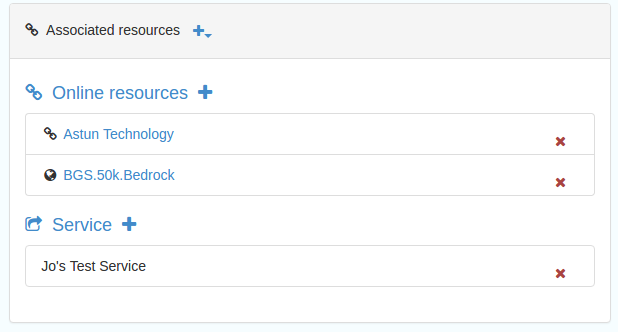

Jo Cook, Metadata Lead Consultant, Astun Technology
Astun's Role
Responsible for setting up the new SSDI catalogue, importing existing records, providing training, customising the interface, and liaising with core developers.
Training Outline
Overview of interface and documentation
Update on Metadata Standards in the new catalogue
Guided walk-through for creating a new record from scratch and validating it
Find section on "Adding Discover Metadata to the SSDI"
Save and Validate as you go!
But not just yet...
Validation overview
Gemini metadata is validated against 4 rulesets or schematrons and also checks for basic XML validity
Associated Resources Wizard
New feature for adding Coupled Resources (linking datasets to services) and Online Resource Locators (URL giving access to, or information about the data)

Viewing records on the map
If an online resource locator is added that points to a valid WMS layer, then this can be added directly to the map using Add to Map
For services, ignore the Add to Map button and add the GetCapabilities URL directly to the Map Add Layer interface, then choose the appropriate layer